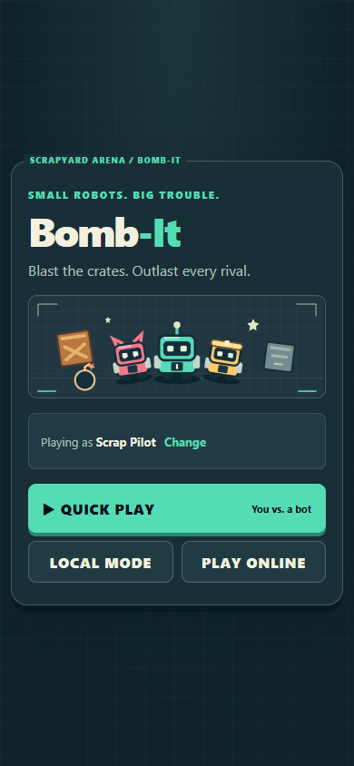
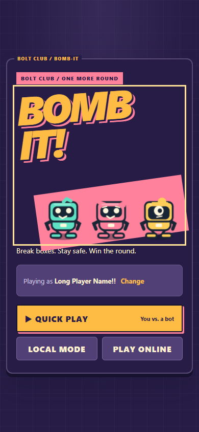
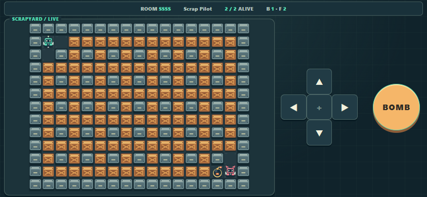
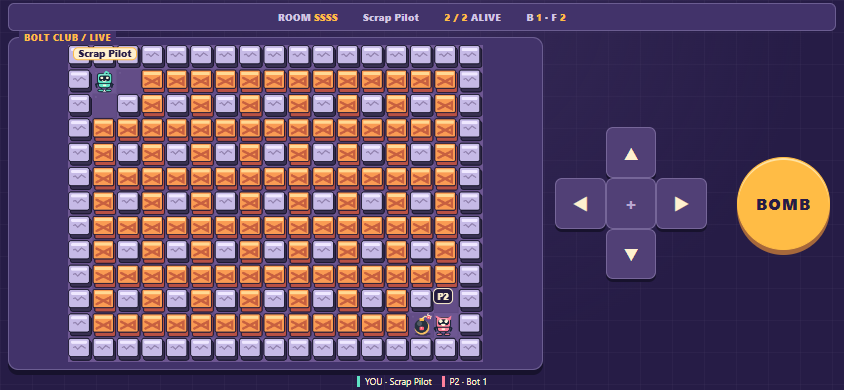
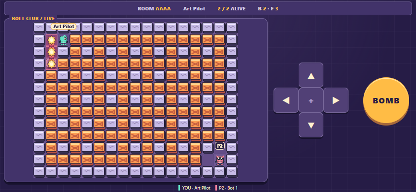
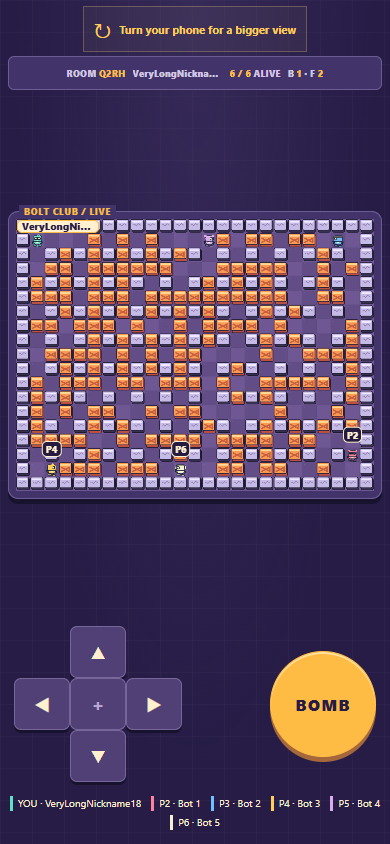

From Scrapyard to Bolt Club
Actual game screenshots. Same 17×13 arena and mechanics. Bolt Club is a review preview, not production.
Play Bolt Club · Play current production
Mobile home · 390×844
Main · Scrapyard
Bolt Club
Mobile landscape match · 844×390
Main · Scrapyard
Bolt Club
New effects and six players
Comic danger · no smoke or residual
25×19 · nearby players and long name
Additional download: 219,606 B vs main; 223,909 B cumulatively vs pre-Scrapyard. Two game atlases: 3.25 MiB RGBA without mipmaps. Physical phone performance is not yet measured.
Original editable sprite sources are in the review PR, scripts/art. Desktop/touch emulation, logo, rules and two-client checks are documented there.